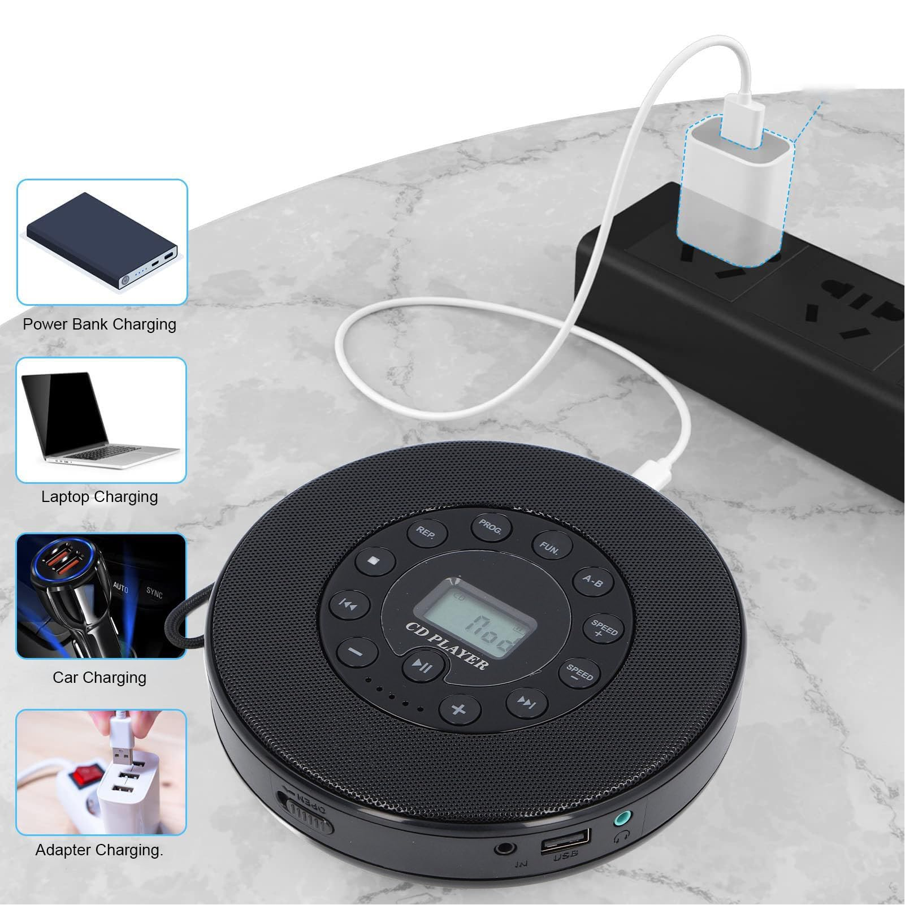
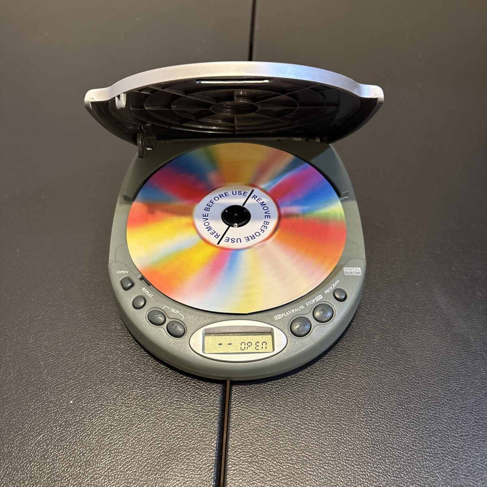
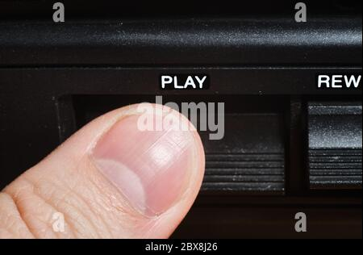
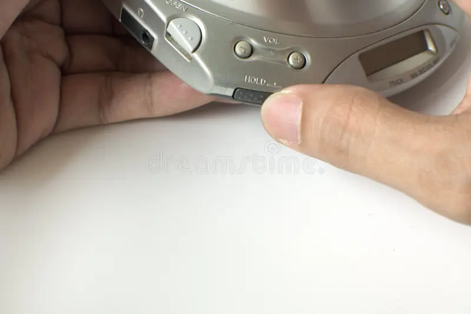
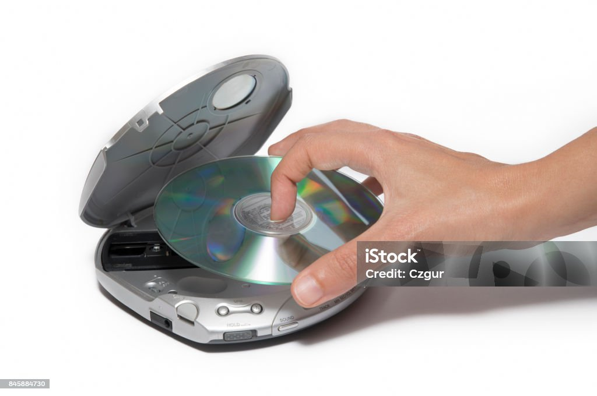

User Guide
Getting Started With Your CD Player
Step 1: Unboxing your device

Open the box and take out the device. Switch the power button to the on position and check display for a low battery symbol.
If the low battery symbol appears on the device's screen, plug the device into a wall outlet with the included USB-C
cable until the screen displays a fully charged message.
Step 2: Inserting a CD into your device

Pull the release latch on the side of the device to open the CD tray. Center a CD over the tray and press down lightly until you hear a click. Then, close the tray.
Step 3: Playing a CD

Press the play/pause button to pause CD playback and again to play/resume the inserted CD.
Press the fastforward/rewind button to fastforward/rewind playback. Press the button again to end fastforwarding/rewinding.
Step 4: Selecting playback mode (optional)

Press the playback mode button to cycle playback modes. The current selection will be displayed momentarily on the device's screen. For more information on playback modes, consult our FAQ.
Step 5: Ending playback and removing a CD

To remove a CD from the device, first ensure playback is stopped. Then, open the CD tray and carefully remove the CD. Close the tray when done.
For further assistance, contact us at out contact page!